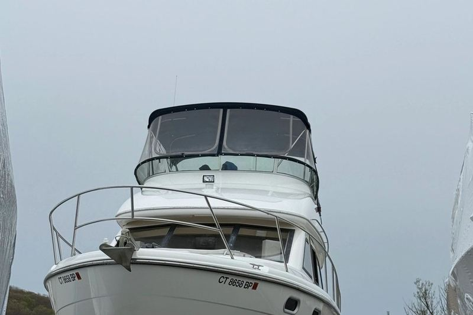

Home / Service Areas
Where we detail
We are fully mobile from our base in Milford and we work the entire Connecticut shoreline, Greenwich in the west through to Mystic and Stonington in the east. If your marina is not listed, ask anyway.
The whole coast, west to east.
Towns are listed west to east, the way the coast runs. Every one has its own page covering the marinas we work in and what the local water actually does to a boat kept there.
Greenwich
The far western end of our range, and the most demanding stretch of coast we work.
Captain Harbor, Cos Cob Harbor, Byram Harbor 45 minutes awayStamford
A deep, busy harbor behind a hurricane barrier, holding everything from 20-footers to 120-foot yachts.
Stamford Harbor, West Branch, East Branch 40 minutes awayDarien
A small, tightly held stretch of water between Stamford and Norwalk, centered on the Five Mile River.
Five Mile River, Scotts Cove, Long Island Sound 35 minutes awayNorwalk
One of the great boating towns on the Sound, with a deep-water harbor and sixteen islands offshore.
Norwalk Harbor, Norwalk River, Norwalk Islands 30 minutes awayWestport
The western edge of our range, centered on the Saugatuck River and the town marinas at Longshore and Compo.
Saugatuck River, Compo Beach, Long Island Sound 20 minutes awayFairfield
A town of mostly smaller boats, with two municipal marinas and a busy mooring field at Southport.
Black Rock Harbor, Southport Harbor, Ash Creek 15 minutes awayBridgeport
Sheltered water in Cedar Creek and Black Rock Harbor, with the fallout that comes from a working port.
Black Rock Harbor, Cedar Creek, Bridgeport Harbor 10 minutes awayStratford
Just across the Housatonic, Stratford is our closest neighbor and one of our busiest service areas.
Housatonic River, Long Island Sound Home base awayMilford
Our own town. We are based here, which means the shortest response times and the most boats we detail anywhere.
Milford Harbor, Housatonic River, Charles Island 10 minutes awayWest Haven
Our next town over to the east, sharing the Oyster River boundary with Milford.
New Haven Harbor, Oyster River, Cove River 15 minutes awayNew Haven
A deep working harbor with historic yacht clubs on one side and river marinas on the other.
New Haven Harbor, Quinnipiac River, Morris Cove 20 minutes awayEast Haven
A beach town more than a marina town, which is exactly where a mobile detailer is worth having.
Farm River estuary, Long Island Sound at Cosey Beach 25 minutes awayBranford
One of the most active boating towns on our stretch of coast, with the Thimble Islands right offshore.
Branford River, Stony Creek, Thimble Islands 30 minutes awayGuilford
The eastern edge of our range, with the largest boats and the deepest mooring fields we regularly service.
Guilford Harbor, West River, Sachem's Head 35 minutes awayMadison
Two miles of the finest beach in Connecticut, and almost no marina to speak of.
Long Island Sound, Hammonasset River, East River 40 minutes awayClinton
A quiet harbor tucked behind the Hammonasset preserve, holding one of the best-regarded marinas in the state.
Clinton Harbor, Hammonasset River 45 minutes awayWestbrook
Home to one of the largest marinas in New England, with over 800 slips on the Patchogue River.
Patchogue River, Duck Island Roads 50 minutes awayOld Saybrook
Where the Connecticut River meets the Sound, and the busiest piece of water on the eastern shoreline.
Connecticut River mouth, North Cove, South Cove 55 minutes awayEssex
One of the most beautiful harbors on the river, and a town that has been building and fixing boats for centuries.
Connecticut River, Essex Harbor, North Cove 60 minutes awayDeep River
Upriver, quiet, and almost entirely fresh water, which changes what a detail here involves.
Connecticut River 55 minutes awayOld Lyme
The marsh side of the river mouth, quieter than Saybrook and full of tidal creeks.
Connecticut River east bank, Great Island, Black Hall River 60 minutes awayEast Lyme
Niantic Bay is broad and open, and the river behind it runs through a fast, narrow inlet.
Niantic Bay, Niantic River, Smith Cove 65 minutes awayWaterford
The east side of the Niantic River, with Mago Point at the inlet and open Sound frontage beyond.
Niantic River east bank, Jordan Cove, Long Island Sound 65 minutes awayNew London
A deep working port with ferries, the Coast Guard Academy, and a river that carries real commercial traffic.
Thames River, New London Harbor 70 minutes awayGroton
Submarine country on the Thames, with the working village of Noank at the mouth of the Mystic River.
Thames River east bank, Fishers Island Sound, Noank 75 minutes awayMystic
The eastern end of our range, and probably the most concentrated stretch of boatyards in Connecticut.
Mystic River, Fishers Island Sound 80 minutes awayStonington
Connecticut's easternmost port, the only one with real Atlantic exposure, and home to the state's last commercial fishing fleet.
Stonington Harbor, Fishers Island Sound, Pawcatuck RiverNot seeing your town?

The list above covers the coastal towns, but we also work the inland river towns off the Connecticut River, private docks well up the tidal creeks, and storage yards nowhere near the water. Plenty of the boats we detail never see a marina at all.
The further ends of the range work best for larger jobs, coating work, or several boats booked together at one marina. Call and describe the boat and where it lives, and we will tell you honestly whether the trip makes sense for both of us.